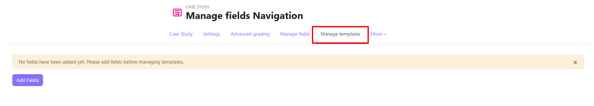
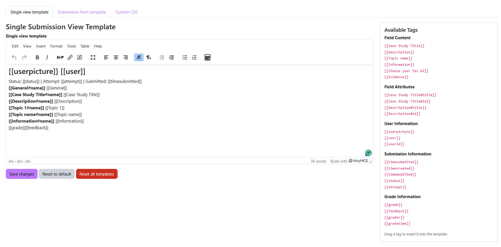
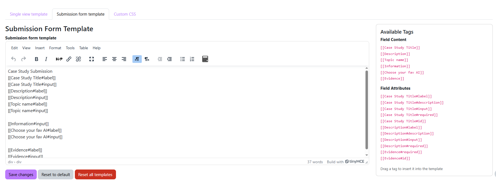
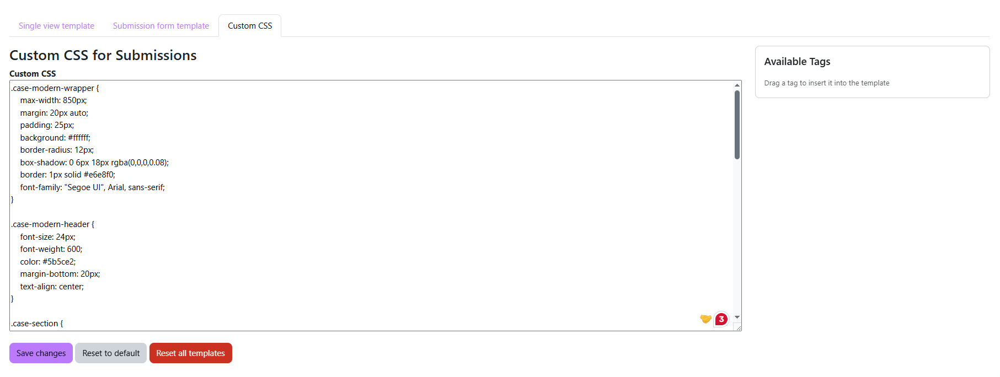

Template Customisation
Templates let you control how the submission form looks and how submitted work is displayed. You can also inject custom CSS for styling. This is an advanced feature — the defaults work well for most activities.
mod/casestudy:managetemplates — Editing Teacher or Manager role.Accessing templates
Inside the Case Study activity, click Manage Templates in the activity navigation.

Three templates
| Template | Controls |
|---|---|
| Submission View Template | How a completed submission is displayed to students and graders |
| Submission Form Template | The layout of the form students fill in when submitting |
| Custom CSS | Additional styles applied to both the form and submission view pages |
Submission View Template
Controls how submitted answers are displayed. Without a custom template, all field values are shown in a simple vertical list.
Available placeholder tags
[[tag]]. Tags that don't match any field are silently removed from the output.User information
| Tag | Output |
|---|---|
[[user]] | Student's full name |
[[userpicture]] | Student's profile picture (<img> element, 50×50 px) |
[[userid]] | Student's Moodle user ID |
Submission information
| Tag | Output |
|---|---|
[[timesubmitted]] | Date/time the submission was submitted |
[[timecreated]] | Date/time the submission was first created |
[[timemodified]] | Date/time the submission was last modified |
[[status]] | Submission status label (e.g., "Satisfactory") |
[[attempt]] | Attempt number (1, 2, 3…) |
Grade information
| Tag | Output |
|---|---|
[[grade]] | Grade badge (satisfactory / unsatisfactory) |
[[feedback]] | Grader's feedback text (formatted HTML) |
[[grader]] | Grader's name (hidden if Hide Grader is enabled) |
[[gradetime]] | Date/time the grade was given |
Field values — use the field name or short name
Replace Field Name with the actual field name (e.g., Case Study Title) or its short name (e.g., CStitle).
| Tag | Output |
|---|---|
[[Field Name]] | Complete field block: label + value (HTML wrapped) |
[[Field Name#name]] | The field label only |
[[Field Name#id]] | The field's internal database ID |
[[Case Study Title]], [[CStitle]], or [[casestudytitle]].
Submission Form Template
Controls the layout of the form students use to enter their submission. Without a custom template, all fields are rendered using the default Moodle form fields.
[[tag]]. Replace Field Name with the actual field name (e.g., Case Category) or the field's short name (e.g., category). Both work.Available placeholder tags
Per field — use the field name or short name
| Tag | Output |
|---|---|
[[Field Name]] | Complete form element: label + input + description |
[[Field Name#label]] | Field label with required indicator (*) |
[[Field Name#description]] | Field description text only (formatted HTML) |
[[Field Name#input]] | Input element only (no label or description) |
[[Field Name#required]] | Required indicator — red * if required, empty otherwise |
[[Field Name#id]] | The field's HTML element ID attribute |

Custom CSS Template
Write plain CSS to style the submission form and view pages for this activity only.
.casestudy-submission or .casestudy-form to avoid styles bleeding into the rest of the Moodle page.
Saving and resetting templates
Click Save to persist your changes. Each template is saved independently.
- Reset button (next to a single template) — reverts that template to its default.
- Reset All button — reverts all three templates to defaults simultaneously. Both require confirmation.